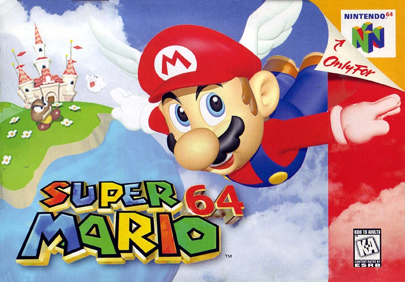

La transition vers la 3D dans les jeux vidéo a été tout aussi révolutionnaire. Avec l'avancée des technologies de traitement graphique dans les années 1990, les jeux ont commencé à exploiter la 3D. Des consoles comme la PlayStation (1994) et la Nintendo 64 (1996) ont popularisé les jeux en 3D, avec des titres emblématiques tels que Super Mario 64 et The Legend of Zelda: Ocarina of Time. Mais celui qui a véritablement tout révolutionné était Super Mario 64.
Le jeu a introduit un environnement tridimensionnel entièrement navigable, où les joueurs pouvaient explorer un monde ouvert. Pour la première fois, les joueurs pouvaient se déplacer librement dans un espace 3D, avec une caméra qui suivait Mario sous différents angles. Cette liberté d'exploration a permis de créer des niveaux ouverts et vastes, où la façon de jouer était beaucoup plus fluide et moins contrainte.
Super Mario 64 a non seulement redéfini le genre de la plateforme en 3D, mais a également influencé des centaines de jeux qui ont suivi. Des titres comme The Legend of Zelda: Ocarina of Time, Banjo-Kazooie, ou Spyro the Dragon ont repris et amélioré les mécaniques introduites par Mario 64, en affinant les contrôles et les designs de niveaux. En d'autres termes, Super Mario 64 a mis en place un modèle qui a été utilisé dans de nombreux jeux en 3D à travers les générations de consoles.